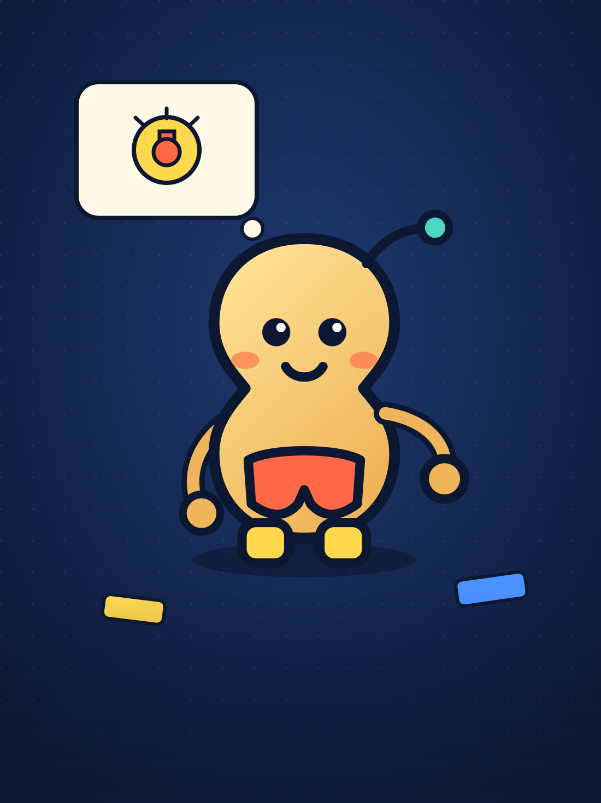
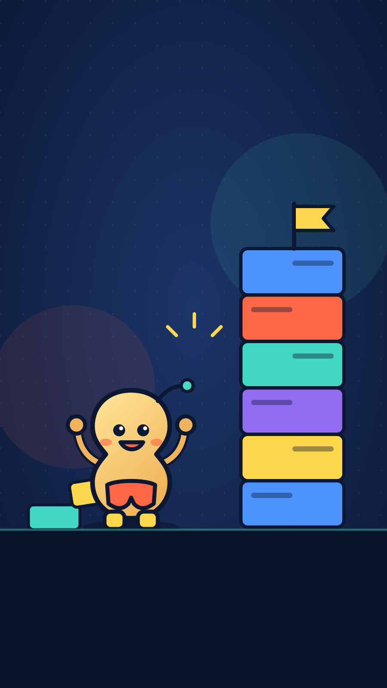
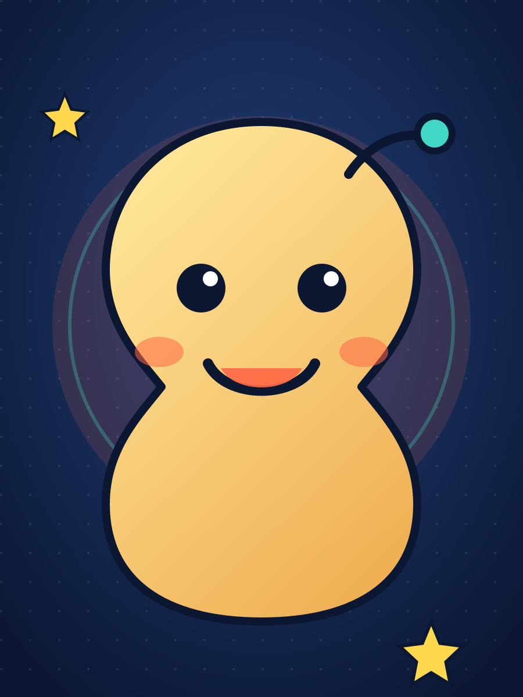
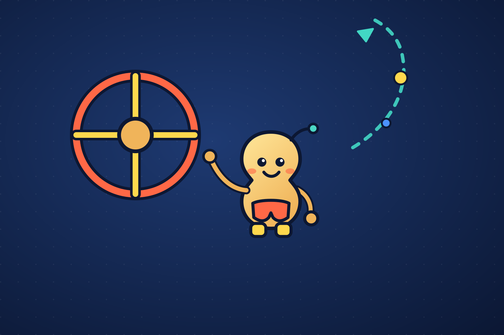
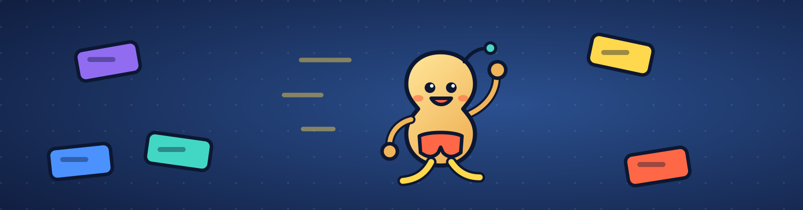

认舞台作品播放的地方
9–10 岁 · Scratch 3.0
中文 · 零基础
从一块积木， 到第一段程序。
这里是你的 Scratch 3 学习基地。先把操作区认清楚，再亲手拖三块积木， 最后点亮绿旗，让想法真的动起来。
看一步→拖一块→点绿旗→改一次

START HERE

今天只用 3 块
试试看
⚑ 当 绿旗 被点击
移动 50 步
说 出发！ 2 秒
积木从上往下执行，就像拼积木一样有顺序。

零基础正在学习 Scratch选角色谁在故事里行动
拖积木告诉角色怎么做
点绿旗马上看到结果
LEGO TO CODE
搭乐高和学编程，
搭乐高和学编程，
其实很像。
不用把 Scratch 想成一门很难的课。它只是换了一种“搭积木”的方法： 选零件、找位置、试着运行，再动手改进。

乐高搭的是造型，Scratch 搭的是动作和想法。
STEP 01 · 搭底座
先决定“谁”和“在哪里”
选好背景和角色，就像先找到积木底板和要用的人仔。
STEP 02 · 装零件
一块积木只做一件事
移动、说话、换造型分开处理，脚本才会清楚，也更容易修改。
STEP 03 · 试一试
每次只改一个地方
点绿旗测试；如果没有按想象运行，先停下，再检查选中的角色和顺序。
SCRATCH OPERATION MAP
Scratch 操作地图
按 5 个站点顺序学。点一下步骤，右侧示意图会亮出对应位置。
→
→
→
→
先认清 5 个区域
不乱点的小秘诀
马上试一下
点左侧每一步，橙色框会指出操作位置。
积木区
代码区
把积木拖进来
出发！
舞台
角色区
花生
新角色
黄色：开始事件
蓝色：移动
紫色：说话与造型
ONE-MINUTE MISSIONS
不用学完，
不用学完，
先做三个小动作。
每次只选一个任务。做出结果后再改数字，你会立刻看到不同。
任务 01
移动
让花生走一段路
把速度数字从 10 改成 50，看看距离有什么变化。
⚑ 当绿旗被点击
移动 50 步
会用到事件 + 运动
任务 02
点击
点一下再说你好
让角色开始说话，再把“你好”改成自己的台词。
当角色被点击
说 你好！ 2 秒
会用到事件 + 外观
任务 03
循环
原地转 8 圈
不用复制八次积木，用一个循环让动作自己重复。
重复执行 8 次
右转 45 度
会用到控制 + 运动

READY, SET, CREATE
先搭一块，
回到操作地图